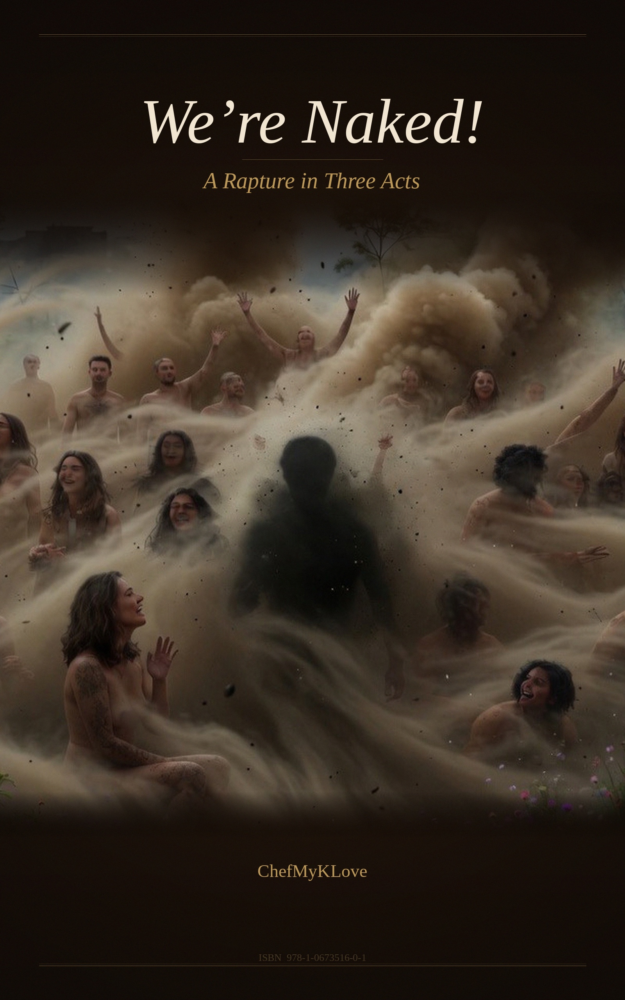

We're Naked!
A Rapture in Three Acts
Willy woke up
and made himself bacon and eggs and rye toast… — "The Story of Willy," King Missile
Part One: The Waking
…This morning,
you roll softly from your well-slumbered sleep-space, reach out with that searching, delicately busy hand, to touch me softly on the shoulder, then the face, just like I'd imagined it would happen…
I'm certain that I smiled.
I awaken happy and filled with the sound of your hearty giggles summoning your bliss… like you can't quite contain the joy of being alive right now in this room this morning, with me. Stirring, still smiling, I watch as the covers fly away and—
—I jump up quick to win the race to the toilet but you're faster. You've been awake longer, and I'm still dreaming, still moving through that otherworldly space, even as my feet find the floor and shuffle over to the table by the sink, where there's a joint already rolled, some water in a glass with that slice of sunlight searing through it: spreading its subtle spectral hues onto the old tapedeck.
There's a lighter and a candle too: the whole ritual of our waking laid out like an altar for us… ready for me to curate the mood while waiting on you to finish up on the head: fumbling fingers find the well-worn play button and my anticipatory soul waits for the room to fill with the flurry of something old, something we both knew by heart before we'd ever even met…
"Don't you DARE light that joint 'till I'm done peeing," you laugh from your throne…
"Are you almost done peeing?"
"Yeah."
"I'm lighting it. First toke, my turn today, Love."
…"Good morning! Good morning!" It's the Beatles, they're making their noise as that chillin' cannabis flower smoke drifts softly into the air. I hand off the spliff as you leap from the bathroom to grab it with grace, while I urgently take my place on the potty with pleasure to release with pleasure the stored liquid of a night full of dreaming.
Yeah. You know how that goes….
"Yeah… I had a wild dream just now," I call through the always open bathroom doorway.
"Prophetic?" Your voice comes back, already curious about what my sleeping mind could have possibly conjured.
"No, I don't think so. I don't know though. Maybe." The sweet smoke swirls toward me from the main room.
"Tell me."
"Let me get off the can first. Can I get a toke?"
"Here—" you're already there, passing it to me like we've communed in this way a thousand thousand times, like our bodies know this language older than words. "Do you want to take a shower?"
"No, not now. Um. I want to sit by the window."
I hop from the toilet and grab the blanket from the bed on my way to the sliding-doors window. It's that blanket you know, that's been around here forever and seen better days but still holds the warmth of our last night's slumber; the smell of us.
"What are you doing?" you ask, and there's something in your voice like I've genuinely stumped you, or maybe it's that you already know. Maybe you're waiting to see if I'll actually say it… Maybe you were there this morning, dreaming it too…
"Do we have any really dusty powder?"
You're quick, "There's the dust in the bag in the vacuum in the closet. I'll get it!" Barely missing a beat.
I place the blanket on the heater by the door, turn around and—
—and the morning light catches your skin in a way that makes my chest do something complicated. You smile excitedly while you hand me the dust and I hand back the doobie.
I open the to the third-floor balcony and this sunny Saturday summer morning pouring in. The air smells like ripe possibility. Like the city breathing in its weekend sigh. Like it had no idea what was about to happen…
Part Two: The Dreaming
"It's certainly not the weather of my dream," I say, looking out at the crisp blue sky. "Shit. Where's the fan?"
The fan's in the closet. I run quickly to get it, then stop where you're standing—to kiss-kiss you, a kiss-kissy-kiss. You kiss-kissy-kiss me right back, put the joint in my mouth, and start the up on
……………High……………The blades start to spin and so I begin:
"Before anything else, there was this: we were at a huge party being thrown in Central Park in New York City. The entire park, you understand? Packed with people! This wasn't a normal party—it was a celebration. A celebration of the day of the apocalypse."
I pause. You're watching me. The bag of dust in my hands is open now, waiting.
"Everyone in the park. Bands playing on a big stage, people dancing, people drinking and people touching each other… Like I mean really touching each other: strangers engaging together and embracing the way you do when you know nothing matters anymore; when the usual social norms and distances just… dissolve.
And there was a famous MC, this guy who kept coming on between performance sets; sets that never quite seemed like they even started or ended, though we were all bopping around to whatever different sound was found. The MC was saying things like 'Great to be here all together, isn't it?' and 'Okay folks, we've got forty-nine minutes to be alive like this,' and 'Isn't it something?! Something so special that we get to spend these final moments together?'"
The fan hums.
"We partied and partied like it was the end of the world. Because it was. Not a care in the world, you understand? That kind of care just… stopped mattering. We all moved into a different way of being with each other. There was reverence, but not the kind that comes out of a sense of duty or dogma. The kind that sprouts from pure awe! Where you're dancing and crying and laughing all at the same time in REJOICE!!"
I'm speaking faster now, the dream pulling at me, pulling me back into it and I feel how eager you are too. How you'd go right back there with me if we could… right back to the moment of the end of the world.
"As we partied we shed all of the hangups until we were dancing 'naked' and together all as one. Everyone was. We all just… shed that society stuff… That pretense, that worry about what anyone thought…. Some even lost their clothes!!
And the MC came on again—this was later, this was close—and told us 'Two minutes to go!' And we all quietly counted down together, watching the sky... and this is where it felt odd to me. We all noticed the smoke trails. Missiles. Over the city. Over the park, and we were all just… there. It didn't matter that they were coming or that they were coming right down upon us."
Your hand finds my shoulder. I don't stop.
"But it wasn't scary in the way you'd think. There was no panic in the scene at all. We knew that this was exactly why we were all here. It was like… we'd already accepted it? Like we'd spent those last special minutes together coming to terms en masse with something we couldn't change, so when the actual moment arrived, we were ready. We were together. The countdown reached zero and then—"
I throw open the bag I am holding. You point the fan at me smiling and that . All around, all around, outside and in, it covers the Lovers and the room that WE'RE NAKED! in.
The sunlight through the window catches it, and for a fraction of an instant it looks like we created something sacred and not just something I'd have to clean up later. Like we were having a little mini communion with the dreamscape aether.
"Do you see the way it's swirling around?" I ask, and my voice sounds younger than I am. It sounds like the voice of the little kid that day in the park who was unsure of how to ask you if you wanted to play.
"Yes," you say. You're watching the dust, but you're also watching me.
"Imagine it to be a cloudy day, not bright like today," I say slowly, "and there was all this swirling around, and we didn't have these walls. We're suspended on the thin air around us. Only dust, like this, swirling all about."
You're amusedly confused as I'm aware of the absurdity of me trying to describe this indescribable sensation, with a bag of dust and a fan. The bizarre bliss of that dream: Trying to describe that sense of being held by something so comprehensive that it includes everything all at once, ending and continuing communally, eternally.
"Come, sit on the heater," I say.
You move toward me. The dust is still swirling, caught in the fan's artificial wind, dancing between the kitchen and the window, between the inside and the outside. It settles on your face, on your shoulders, on your hair. It settles on mine. We're becoming covered in this dust while you're holding onto the moment of trying to understand my wacky morning dream.
"Masses of swirling dust carried all of us, and everything else away. Not violently. Not in a way that hurt but in a totally pleasant fashion. Gentle, almost. Like being held by something so vast and indifferent and somehow still SO Loving. Like the universe's way of saying 'Welcome home'."
"It's really dusty," you say, and laugh a little.
"It's quite an effective effect," I say, and I'm not only talking about the dust. I'm talking about all of the magic of this morning WE'RE NAKED! together in. The way your dusty body looks in THIS dreamy light.
The fact that all of this is impermanent… if it ever was even real. That WE can't possibly last—not like this. That the dust will settle and the day will come where eventually the world will end in some way or another, and none of it will have mattered in the way we think it matters.
The things that we cherish over a lifetime become as fleeting as a moment in Love. Or the breaths that Lovers breathe together.
The fan still hums.
"But here's the thing: we still hung out and partied on! We were together in the dust, and we couldn't see each other for all of it swirling around, but we could feel each other vibing, you know? Such a strange truncated immediacy. Through it we were all expressing this collective awe with what was going on.
We were all saying things like 'Wow, this is all pretty weird', or 'Interesting sensation!' and 'Not at all what I expected'. There was this tone—this feeling—that was almost… grateful? Groovy is the word my dream-self kept thinking. 'Ohhh yeahhhh!.'"
I look at you and smile, still lost in that deeply engrossing memory: that swirly enveloping brouhaha of wonder that enraptured me only moments ago.
"This was the end of the dream," I say quietly. "What I woke from just now: those clouds of swirling dust and everyone with whom I'd ever connected, and everyone else too, we were all in it together... you were there with me too…"
The fan hums. The dust swirls.
"It was very peaceful… like your hand on my face waking me up just now. Welcoming me home"
Part Three: The Settling
The dust swirls. The fan hums.
It is very peaceful in your luscious gaze, while we're naked and awake in Love and recovering from rapture.
You turn off the fan. The dust keeps moving, keeps swirling while slowly losing its momentum and quietly settling back into the room's corners where all good dust lives.
You spark up a cigarette and sit back silently on the pseudo-sofa at the sliding doors. I watch you watch the settling dust. There's something in your expression I can't quite read—not sadness, not exactly. Something closer to recognition.
"That must have been beautiful," you say, finally. Fondly.
"Yeah. Quite something. It feels a little melancholy now, though." I say, leaning into the feeling, "Perhaps it's that I'm having cravings for it already. It was such a prescient scene. Beautiful is almost too vague. I don't know, Love. Yeah."
You don't respond right away. You're still watching the dust. It's about settled now. A mess creeping back to its secret places.
"Good dreaming," you say.
"So good waking up with you," I say back, and I mean it with a weight that probably shows on my face:
As I struggle to place whether this dreamy moment itself is even real…. Or if I just made it all up so I could somehow tell you that I hope I will see you in my dreams someday.
You smile—that particular smile that's been haunting me since that late summer day in the park forever ago, when you had me draw a poem on your thigh. I was too young and awestruck in Love with you. Much too daft to understand what you were offering… What that kind of vulnerability meant between people on their way to being Lovers, or not, as it were.
Burning up in atmosphere.
And now, from afar it seems
That I can see myself from here…
Dripping with an irony that still stings enough to this day so as to populate such a dream as this...
—as you spring from the heater onto the bed, into your rush-ready robe, then right out the door with a thumbs up. No words, just a .
And I'm naked and alone.
I sit by the window for a wee while longer, this morning. Watching the last lingering dust motes catch the warming light and I'm thinking.
Thinking about that time in Central Park with only forty-nine minutes to go; about how we're all walking around with a future of apocalypse dust on our skin and calling it just another Tuesday.
Because it's been forever since that dream and you're the only one I ever wanted to share it with. I ache at how it breaks something in me that I never did, every single time I think of you...
...And that all I can do is dream, that we're naked and that I've got this mess in the pad and a coffee and a full day with you on the way.
∞